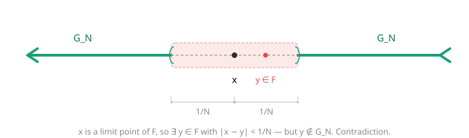

Exercises 2A — Outer Measure on \(\mathbb{R}\)¶
Source: Axler, Measure, Integration & Real Analysis (MIRA), Section 2A, pp. 23–24.
Exercise 1¶
Question¶
Prove that if \(A\) and \(B\) are subsets of \(\mathbb{R}\) and \(|B| = 0\), then \(|A \cup B| = |A|\).
Solution¶
Proof.
We show both inequalities.
(i) \(|A \cup B| \leq |A|\):
Since \(|B| = 0\), for every \(\varepsilon > 0\) there exists a sequence of open intervals \(\{I_k\}_{k=1}^{\infty}\) with \(B \subseteq \bigcup_{k=1}^{\infty} I_k\) such that
Now let \(\{G_i\}_{i=1}^{\infty}\) be any sequence of open intervals that covers \(A\), i.e. \(A \subseteq \bigcup_{i=1}^{\infty} G_i\). Then
so by the definition of outer measure (MIRA, Definition 2.2),
Taking the infimum over all such covers \(\{G_i\}\) of \(A\), we obtain
Since \(\varepsilon > 0\) was arbitrary, we conclude \(|A \cup B| \leq |A|\).
(ii) \(|A| \leq |A \cup B|\):
Since \(A \subseteq A \cup B\), this follows immediately from the order-preserving property of outer measure (MIRA, 2.5).
Combining (i) and (ii), we have \(|A \cup B| = |A|\). \(\blacksquare\)
Exercise 2¶
Question¶
Suppose \(A \subseteq \mathbb{R}\) and \(t \in \mathbb{R}\). Let \(tA = \{ta : a \in A\}\). Prove that \(|tA| = |t|\,|A|\). [Assume that \(0 \cdot \infty\) is defined to be \(0\).]
Solution¶
Proof.
If \(t = 0\), then \(tA = \{0\}\) (or \(tA = \emptyset\) if \(A = \emptyset\)). In either case \(|tA| = 0 = 0 \cdot |A| = |t|\,|A|\), using the convention \(0 \cdot \infty = 0\).
Now assume \(t \neq 0\). Let \(\{I_k\}_{k=1}^{\infty}\) be any sequence of open intervals covering \(A\), i.e. \(A \subseteq \bigcup_{k=1}^{\infty} I_k\). Then
where each \(tI_k\) is an open interval with \(\ell(tI_k) = |t|\,\ell(I_k)\). Thus
Taking the infimum over all such covers of \(A\), we obtain
For the reverse inequality, since \(t \neq 0\) we can write \(A = \frac{1}{t}(tA)\). Applying the inequality just proved with \(\frac{1}{t}\) in place of \(t\) and \(tA\) in place of \(A\), we get
Multiplying both sides by \(|t|\) gives \(|t|\,|A| \leq |tA|\).
Combining both inequalities, \(|tA| = |t|\,|A|\). \(\blacksquare\)
Exercise 3¶
Question¶
Prove that if \(A, B \subseteq \mathbb{R}\) and \(|A| < \infty\), then \(|B \setminus A| \geq |B| - |A|\).
Solution¶
Proof.
Note that \(B \subseteq (B \setminus A) \cup A\), since every element of \(B\) is either in \(A\) or in \(B \setminus A\). By the order-preserving property (MIRA, 2.5) and countable subadditivity of outer measure (MIRA, 2.8), we have
Since \(|A| < \infty\), we may subtract \(|A|\) from both sides to obtain
Exercise 4¶
Question¶
Suppose \(F\) is a subset of \(\mathbb{R}\) with the property that every open cover of \(F\) has a finite subcover. Prove that \(F\) is closed and bounded.
Solution¶
Key idea: If a set is not closed, it is missing a limit point \(x\). Build an open cover of \(F\) that nibbles toward \(x\) but never reaches it, so any finite subcover leaves out a ball around \(x\) — contradicting the existence of points of \(F\) arbitrarily close to \(x\).

Limit Point
A limit point of a set \(F \subseteq \mathbb{R}\) is a point \(x \in \mathbb{R}\) such that for every \(\varepsilon > 0\), there exists \(y \in F\) with \(0 < |x - y| < \varepsilon\). A set is closed if and only if it contains all its limit points (Supplement for MIRA).
Proof.
\(F\) is closed:
Suppose for contradiction that \(F\) is not closed. Then there exists a limit point \(x\) of \(F\) with \(x \notin F\). For each \(n \in \mathbb{Z}^+\), define
Each \(G_n\) is open (it is the union of the two open rays \((-\infty, x - \tfrac{1}{n})\) and \((x + \tfrac{1}{n}, \infty)\)). We claim \(\{G_n\}_{n=1}^{\infty}\) is an open cover of \(F\). Indeed, let \(y \in F\). Since \(x \notin F\), we have \(y \neq x\), so \(|x - y| > 0\). Choose \(n\) large enough that \(\tfrac{1}{n} < |x - y|\). Then \(y \in G_n\). Hence
By hypothesis, there exists a finite subcover. Since \(G_1 \subseteq G_2 \subseteq \cdots\), any finite subcollection \(\{G_{n_1}, \ldots, G_{n_M}\}\) satisfies
So \(F \subseteq G_N = \{y \in \mathbb{R} : |x - y| > \tfrac{1}{N}\}\). But \(x\) is a limit point of \(F\), so there exists \(y \in F\) with \(0 < |x - y| < \tfrac{1}{N}\), meaning \(y \notin G_N\). This contradicts \(F \subseteq G_N\). Therefore \(F\) is closed.
\(F\) is bounded:
The collection \(\{(-k, k)\}_{k=1}^{\infty}\) is an open cover of \(F\), since \(F \subseteq \mathbb{R} = \bigcup_{k=1}^{\infty}(-k, k)\). By hypothesis, there exists a finite subcover. Since \((-1, 1) \subseteq (-2, 2) \subseteq \cdots\), the union of any finite subcollection equals the largest interval in that subcollection. Hence there exists \(N \in \mathbb{Z}^+\) such that \(F \subseteq (-N, N)\). Therefore \(F\) is bounded. \(\blacksquare\)
Exercise 5¶
Question¶
Suppose \(\mathcal{A}\) is a set of closed subsets of \(\mathbb{R}\) such that \(\bigcap_{F \in \mathcal{A}} F = \emptyset\). Prove that if \(\mathcal{A}\) contains at least one bounded set, then there exist \(n \in \mathbb{Z}^+\) and \(F_1, \ldots, F_n \in \mathcal{A}\) such that \(F_1 \cap \cdots \cap F_n = \emptyset\).
Solution¶
Proof.
Since \(\bigcap_{F \in \mathcal{A}} F = \emptyset\), taking complements gives
By De Morgan's law, this becomes
Since each \(F \in \mathcal{A}\) is closed, each \(\mathbb{R} \setminus F\) is open. Thus \(\{\mathbb{R} \setminus F\}_{F \in \mathcal{A}}\) is a collection of open sets whose union is \(\mathbb{R}\).
By hypothesis, there exists a bounded set \(\hat{F} \in \mathcal{A}\). Since \(\hat{F}\) is closed and bounded, the collection \(\{\mathbb{R} \setminus F\}_{F \in \mathcal{A}}\) is an open cover of \(\hat{F}\). By the Heine–Borel Theorem (MIRA, 2.12), there exists a finite subcover: there exist \(F_1, \ldots, F_n \in \mathcal{A}\) such that
By De Morgan's law, \(\bigcup_{k=1}^{n} (\mathbb{R} \setminus F_k) = \mathbb{R} \setminus \bigcap_{k=1}^{n} F_k\), so
This implies \(\hat{F} \cap \bigcap_{k=1}^{n} F_k = \emptyset\), i.e.
Since \(\hat{F}, F_1, \ldots, F_n\) are all elements of \(\mathcal{A}\), we have exhibited a finite subcollection of \(\mathcal{A}\) whose intersection is empty. \(\blacksquare\)
Exercise 6¶
Question¶
Prove that if \(a, b \in \mathbb{R}\) and \(a < b\), then
Solution¶
Key idea: Each interval differs from \([a,b]\) by at most one endpoint, and single points have outer measure zero, so Ex 1 does all the work.
Proof.
Since finite sets have outer measure zero (MIRA, 2.3), we have \(|\{a\}| = |\{b\}| = 0\). Observe that
Applying Exercise 1 of 2A (if \(|B| = 0\) then \(|A \cup B| = |A|\)) to each in turn, together with (MIRA, 2.14):
Exercise 7¶
Question¶
Suppose \(a, b, c, d \in \mathbb{R}\) with \(a < b\) and \(c < d\). Prove that
Solution¶
Key idea: The "only if" direction uses a direct computation after noting the union collapses to a single interval when the two intervals overlap. The "if" direction uses a covering argument: any cover of \((a,b)\cup(c,d)\) can be combined with an efficient cover of the gap \([b,c]\) to yield a cover of a larger interval whose length is known, giving a contradiction if the total is too small.
Proof.
Without loss of generality, assume \(a \leq c\).
(\(\Rightarrow\)) If \((a,b) \cap (c,d) \neq \emptyset\):
Since \(a \leq c\), the intersection is non-empty if and only if \(b > c\). In this case \((a,b) \cup (c,d) = (a,d)\), so
where the strict inequality holds because \(c < b\). Hence \(|(a,b) \cup (c,d)| \neq (b-a) + (d-c)\).
(\(\Leftarrow\)) If \((a,b) \cap (c,d) = \emptyset\):
Since \(a \leq c\), the disjointness of the intervals implies \(b \leq c\). The upper bound follows immediately from countable subadditivity (MIRA, 2.8):
It remains to show \(|(a,b) \cup (c,d)| \geq (b-a)+(d-c)\). Suppose for contradiction that
Then there exists \(\eta > 0\) and a sequence of open intervals \(\{I_k\}_{k \in \mathbb{Z}^+}\) covering \((a,b) \cup (c,d)\) such that
By Exercise 6, \(|[b,c]| = c - b\), so by the definition of outer measure there exists a sequence of open intervals \(\{J_k\}_{k \in \mathbb{Z}^+}\) covering \([b,c]\) with
for some \(\varepsilon \in (0, \eta)\). Since \(\{I_k\} \cup \{J_k\}\) covers
combining both series gives
This contradicts \(|(a,d)| = d - a\) (by Exercise 6). Therefore \(|(a,b) \cup (c,d)| \geq (b-a)+(d-c)\), and combined with the upper bound above,